Elementalist
Ranged healer and damage; the world itself.
Wildwood and Tide-Born callers of wind, water and earth. They do not command the elements; they ask, and the world has been more willing since the gods died.
Spellbook
Role: Ranged Healer / DPS · Resource: Mana + Element Attunement (switch between Wind, Water and Earth) · Races: Sylvani, Thornkin, Beast-Touched, Tide-Born
Channels the forces of nature (wind, water and earth) to heal wounds with healing springs and drive enemies back with earthquakes and gales.
In Orvessa: elementalists speak to the world itself rather than to any god. Many believe Seraveth's power still lives in the sea and the storms. Tide-Born elementalists pour a drop of rum into the waves before every fight.
| Level | Spell | Effect |
|---|---|---|
| 1 | Elemental Bolt | Basic attack |
| 4 | Healing Spring | Healing zone |
| 8 | Gust | Knocks back |
| 10 | Earthen Shield | Protection |
| 14 | Chain Lightning | Jumps between targets |
| 18 | Tidal Surge | Healing wave |
| 22 | Rockfall | Stun |
| 26 | Wind Walk | Faster running |
| 32 | Earthquake | AoE stun |
| 38 | Storm Call | AoE lightning |
| 46 | Rain of Renewal | Mass heal |
| 54 | Elemental Ascendance | Transform into an element |
| 60 | Primal Fury | Ultimate: every element at once |
Talent trees
- Tidecaller (healer): Healing Wave, Tidal Focus, Cleanse, Soothing Rain. Capstone: Ocean's Blessing.
- Stormcaller (ranged DPS): Lightning Mastery, Static Charge, Gale Force, Overload. Capstone: Tempest.
- Earthshaper (control, tank): Stone Armour, Rockslide, Tremor, Earthbind. Capstone: Titan's Will.
Gallery

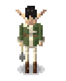

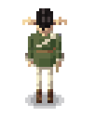

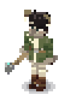

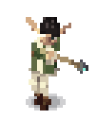

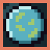

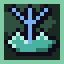

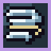

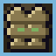

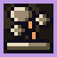

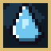

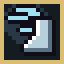

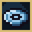